31 Stochastic Processes
TOC
- Misc
- Terms
- Transitions
- 1-step
- 2-step
matrixpowerand n-step
- Communication
- Communication
- Classes
- Reducibility
- Random Walk
- Transient, Recurrent, and Absorbing States
- Hidden Markov Models (HMM)
- Markov Switching Dynamic Regression (MSDR)
- Markov Switching Auto Regression (MSAR)
Misc
- Notes from
Terms
- Brownian Motion - a continuous process such that its increments for any time scale are drawn from a normal distribution
- Communication Class - consists a set of states that all communicate with one another (e.g. A must be reachable from B and B reachable from A)
- Irreducible - A Markov chain is irreducible if it consists of a single communication class otherwise it’s Reducible
- Limiting distribution (aka invariant distribution) describes the long-term probability of being in any state, as well as the proportion of time spent in that state.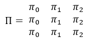
- This is like a asymptotic State Probability Distribution or a ∞-step State Probability Distribution
- Can be calc’d by raising a transition matrix to a very large power
matrixpower(printers, 100)
[,0] [,1] [,2]
[0,] 0.5882353 0.2941176 0.1176471
[1,] 0.5882353 0.2941176 0.1176471
[2,] 0.5882353 0.2941176 0.1176471- Markov property: A system or variable is said to be Markov when knowing the current state of the process is just as good as knowing the entire history.
- Markov processes are said to be ‘memoryless’ because the history of their states is irrelevant.
- Recurrent states - states that have an infinite number of expected visits
- Absorbing state (boundary) - (special recurrent case) states that only communicate with themselves. A state in which once it’s entered, you can never leave
- State Probability Distribution - Distribution of the Markov variable Xt at time, t, and it is denoted by πt
- Notation for n-states at time, t (or “step” t is the same thing)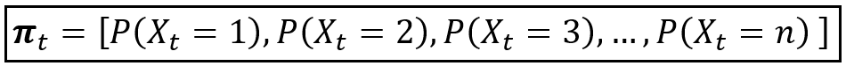
- Each element of πt can be referenced using the notation πjt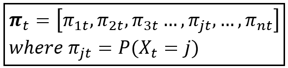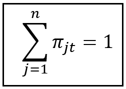
- The sum of πjt=1, so that says that the sum of the probabilities for all the states at a given time step must be 1.
- Note that each row in a transition matrix sums to 1.
- The sum of πjt=1, so that says that the sum of the probabilities for all the states at a given time step must be 1.
- Transient states - states that have a finite number of expected visits
- examples:
- state 0 (above) - if state 0 is the starting point, then after the 1st transition, it is no longer a potential destination
- states 1,2,3 (drunkard below) - small values or zeros in the limiting distribution
- examples:
- Transition matrix
- Row index represents the initial or source state at time t
- Column index represents the destination state at time (t+n)
- Each Cell is the probability that by starting in source state, i, you end-up in destinations state, j after n-steps/time
Transitions
- “steps” and “time steps” are interchangable in terms of transition matrices, e.g. step n+2 and time, t+2, state probability distributions, etc.
- 1-Step transition matrix
- Example:
- This transition matrix describes
- y-axis - probabilities of starting with an initial state (e.g. # of printers broken at the beginning of the day)
- x-axis - probabilities of transitioning to the final (for a 1-step) state (e.g. # of printers broken at the end of that day which will be the initial state of the following day)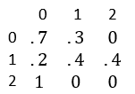
- (0,0) says there’s a 70% probability if you start the day with 0 printers broken, then you’ll end the day with 0 printers broken.
- (1,2) says there’s a 40% probability if you start the day with 1 printer broken, then you’ll end the day with 2 printers broken.
- (2,1) says there’s a 100% probability if you start the day with 2 printers broken, then you’ll end the day with 0 printers broken.
- e.g. a repairman is contractually obligated to show up and fix or replace both printers by the end of the day if they break on the same day.
- This transition matrix describes
- Example:
- 2-Step Transition
- Example: Same scenario as above but there are two steps (2-day interval) in which the transition is from state 0 to state 1, (0,1).
- To do that we would need to sum all possible two-step transitions that start at state 0 and end-up in state 1.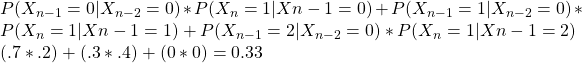
- First potential 2-step transition says:
- 1st step - the probability of moving to state 0 (n-1) given you were in state 0 (n-2) then
- 2nd step - the probability of moving to state 1 (n) given you were in state 0 (n-1)
- For this example, each 2 step transition will be of the form p(x|0) * p(1|x)
- In general, the probability that the Markov chain will be in state j at step n, given that it was in state i at (n-1)
- Pij(Xn = j | Xn-1 = i)
- Example: Same scenario as above but there are two steps (2-day interval) in which the transition is from state 0 to state 1, (0,1).
- N-step
- In general,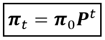
- Where
- P is the trasition matrix and t is the step (t is for time step instead of N)
- π0 is like a prior probability vector for each state at t = 0
- This prior gives us the probabilities for which state we’ll likely start out at.
- A little different from other the calculations in the Transitions section. Here t-step transition matrix is multiplied times a prior
- Where
matrixpower(user-defined) performs this calculation for all n-step transitions
- In general,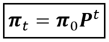
# this is just matrix exponentiation and multiplying the square (based on row dim) identity matrix at the end for some reason (probably makes a diff for non-square matrices)
matrixpower <- function(mat,k) {
if (k == 0) return (diag(dim(mat)[1])) # 3x3 identity matrix
if (k == 1) return(mat)
if (k > 1) return( mat %*% matrixpower(mat, k-1))
} # matrix power function from Introduction to Stochastic Processes with R by Robert Dobrow
printers <- matrix(c(.7, .2, 1, .3, .4, 0, 0, .4, 0), nrow = 3, ncol = 3) # make the matrix
printers
[,0] [,1] [,2]
[0,] 0.7 0.3 0.0
[1,] 0.2 0.4 0.4
[2,] 1.0 0.0 0.0
# 2-step
matrixpower(printers, 2)
[,0] [,1] [,2]
[0,] 0.55 0.33 0.12
[1,] 0.62 0.22 0.16
[2,] 0.70 0.30 0.00
# also 3-step
matrixpower(printers, 3)
[,0] [,1] [,2]
[0,] 0.571 0.297 0.132
[1,] 0.638 0.274 0.088
[2,] 0.550 0.330 0.120- In the 2-step transition output, 0.33 at (0,1) matches the manual calculation above
- There’s a manual change to start indexing from 0, as that’s the typical way of indexing matrices for stochastic processes. R indexing typically starts from 1.
Communication
- Communication
- definition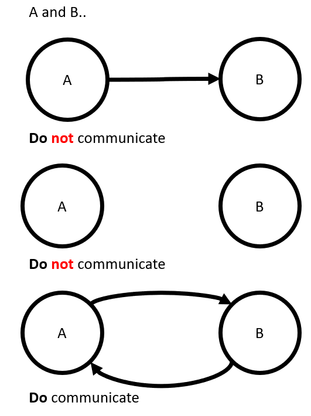
- Classes
- states in class X can communicate (i.e. transition to one another) but Class X members do not communicate with members of Class Y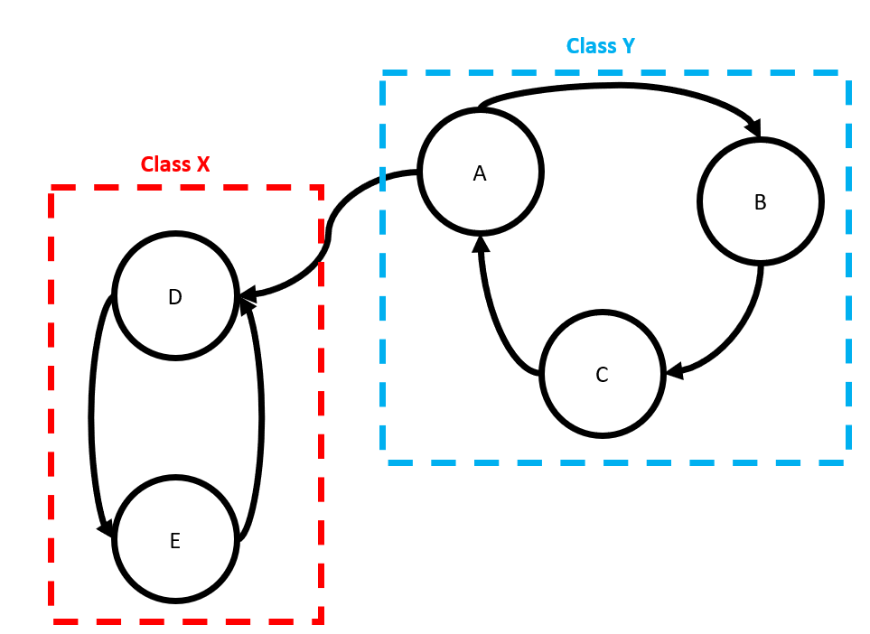
- Reducibility
- Irreducible - A Markov chain is irreducible if it consists of a single communication class otherwise it’s reducible.
- Example
- Irreducible - A Markov chain is irreducible if it consists of a single communication class otherwise it’s reducible.
reducible <- matrix(c(0, 0, 0, 0, 0, .4, .9, .7, 0, 0, 0, .1, .3, 0, 0, .6, 0, 0, .5, .5, 0, 0, 0, .5, .5), nrow = 5, ncol = 5)
reducible
[,0] [,1] [,2] [,3] [,4]
[0,] 0 0.4 0.0 0.6 0.0
[1,] 0 0.9 0.1 0.0 0.0
[2,] 0 0.7 0.3 0.0 0.0
[3,] 0 0.0 0.0 0.5 0.5
[4,] 0 0.0 0.0 0.5 0.5
matrixpower(reducible, 100)
[,0] [,1] [,2] [,3] [,4]
[0,] 0 0.350 0.050 0.3 0.3
[1,] 0 0.875 0.125 0.0 0.0
[2,] 0 0.875 0.125 0.0 0.0
[3,] 0 0.000 0.000 0.5 0.5
[4,] 0 0.000 0.000 0.5 0.52 Communication Classes
- loop with states 1 and 2 (see rows 1 and 2)
- loop with states 3 and 4 (see rows 3 and 4)
starting at state 0,
- You can transition to either of the 2 classes through state 1 or state 3 but never return to state 0 (i.e. state 0 isn’t part of a class).
starting in states 1 or 2, you remain in that class indefinitely
starting in states 3 or 4, you remain in that class indefinitely
Limiting Distributions (see definition in Terms)
- For a Reducible Chain
- Some or all the values for a column will be different
- Some or all the rows will be different
- The values are different because the starting state matters
- For an Irreducible Chain:
- Each column will have the (essentially) the same value in each row
- Each row will be identical
- The values are the same because the starting state doesn’t matter
- Note that in the example above that each state can (eventually) be reached from state 0.
- For a Reducible Chain
Random Walk
- Transient, Recurrent, and Absorbing states
- Example: Drunkard that either makes it home (state 4) or the ocean (state 0)
random_walk <- matrix(c(1, .5, 0, 0, 0, 0, 0, .5, 0, 0, 0, .5, 0, .5, 0, 0, 0, .5, 0, 0, 0, 0, 0, .5, 1),
nrow = 5,
ncol = 5)
[,0] [,1] [,2] [,3] [,4]
[0,] 1.0 0.0 0.0 0.0 0.0
[1,] 0.5 0.0 0.5 0.0 0.0
[2,] 0.0 0.5 0.0 0.5 0.0
[3,] 0.0 0.0 0.5 0.0 0.5
[4,] 0.0 0.0 0.0 0.0 1.0
matrixpower(random_walk, 100)
[,0] [,1] [,2] [,3] [,4]
[0,] 1.00 0.000000e+00 0.000000e+00 0.000000e+00 0.00
[1,] 0.75 4.440892e-16 0.000000e+00 4.440892e-16 0.25
[2,] 0.50 0.000000e+00 8.881784e-16 0.000000e+00 0.50
[3,] 0.25 4.440892e-16 0.000000e+00 4.440892e-16 0.75
[4,] 0.00 0.000000e+00 0.000000e+00 0.000000e+00 1.00- States 0, 4 are absorbing states and states 1,2,3 are transient
- Eventually through probability, there must be a transition to states 0 or 4 where it’s impossible to leave. Therefore the number of visits to 1,2,3 will be finite and by definition, they are transient.
- Limiting distribution - notice the middle states have either very small numbers or zero values, this is a property of transient states.
Hidden Markov Models (HMM)
- Notes from A Math Lovers Guide to Hidden Markov Models
- Used to study phenomena in which only a portion of the phenomenon can be directly observed while the rest of it cannot be directly observed, although its effect can be felt on what is observed. The effect of the unobserved portion (“hidden”) can only be estimated.
- Observed portion is modeled using arima, glm, rf, etc.
- Unobserved portion is modeled using Markov process
- Sort of like a latent variable that’s values are states (aka regimes)
- The two models produce a final prediction by calculating an expected value at each step that uses predictions from observed model and probabilities from the unobserved model.
- Use Cases
- Studying human workflows using computer event logs. Part of that is taking a user’s raw event log (keystrokes, URLs visited, etc.) and determining what they were doing at each time (background research, document review, etc.). Sometimes you can guess from one event in isolation, but usually you also need to look at the events before and after to have confidence.
- You have a photograph of a page from a novel, and you want to digitize the text. The photograph is already segmented into images of words. Most of them can be decoded with OCR, but some words are ambiguous because of dirt on the original page (is that “quick” or “quack”?). You want to use the surrounding words to pick the best option.
- You have a sequence of brain scans, taken every second while a person was playing a video game. During the game their avatar moves in and out of buildings, and your goal is to guess whether it is inside or outside using only the brain scans. Any given scan is very ambiguous, but the avatar usually stays inside/outside for many seconds at a time. You expect large spans of time where the avatar is in(out)side, and where the brain scans look slightly more in(out)side on average.
- Components
- An underlying markov chain that describes how likely you are to transition between different states (or stay in the same state). Typically this underlying state is the thing that you’re really interested in. If there are k states in the HMM then the markov chain consists of:
- k*k transition matrix saying how likely you are to transition from a state Sa to a state Sb
- k-length vector saying how likely you are to start off in each of the states.
- A probability model that lets you compute Pr[O|S] — the probability of seeing observation O if we assume that the underlying state is S.
- Unlike the markov chain, which has a fixed format, the model for Pr[O|S] can be arbitrarily complex. In many HMMs though Pr[O|S] is pretty simple: each state S is a different loaded die, and the Pr[O|S] are its probabilities of landing on each side.
- An underlying markov chain that describes how likely you are to transition between different states (or stay in the same state). Typically this underlying state is the thing that you’re really interested in. If there are k states in the HMM then the markov chain consists of:
- Baum-Welch algorithm
- Specific case of the EM algorithm
- As with the EM algorithm, solutions are only locally optimal
- Meaning you’re results will vary for each model you run (i.e. a non-convex problem)
- As with the EM algorithm, solutions are only locally optimal
- Step summary
- Guess at what the state labels are and train an HMM using those guesses
- The guess is usually about the parameters of the HMM and not actually the states.
- Typically random values from a dirichlet distribution
- The guess is usually about the parameters of the HMM and not actually the states.
- Use the trained HMM to make better guesses at the states, and re-train the HMM on those better guesses
- Uses the Forward-Backward Algorithm
- Continue process until the trained HMM stabilizes.
- Guess at what the state labels are and train an HMM using those guesses
- Forward-Backward Algorithm
- Find the most likely state for each timestep
- Unlike the Viterbi algorithm which computes the mostly likely sequence of states
- In practice, both algorithms only disagree about 5% of the time
- Unlike the Viterbi algorithm which computes the mostly likely sequence of states
- Find the most likely state for each timestep
- Specific case of the EM algorithm
- Mitigating the local optimum issue
- You can simplify your HMM.
- The number of local optima can grow exponentially with the number of parameters in your HMM. If you reduce the parameter size you can reduce the number of local optima there are to fall into.
- Examples
- Using a 2-state rather than a 3-state HMM.
- If your target is multinomial, collapse categories so that the cardinality is smaller.
- Examples
- The number of local optima can grow exponentially with the number of parameters in your HMM. If you reduce the parameter size you can reduce the number of local optima there are to fall into.
- Use business logic or domain expertise to have an initial HMM that is similar to what you expect the ultimate outcome to be.
- Different local optima often have large qualitative differences between each other, so on a gross level the HMM you ultimately converge on is likely to resemble the one you started with.
- Do make sure to have your guess be partly random though — there could be several local optima that are consistent with your business intuitions, and if so you want to know about it.
- (Sounds like formulating a prior)
- You can simplify your HMM.
- Markov Switching Dynamic Regression (MSDR)
- HMM for times series which uses dynamic regression as the observed model.
- Notes from A Worm’s Eye-View of the Markov Switching Dynamic Regression Model
- Basic formula for each time step, t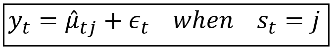
- μ^tj: final prediction for time step, t
- The j subscript is just saying that the hidden state variable st is part of the final prediction
- st: hidden random variable that’s made-up of states (aka regimes) and helps determine the final prediction, μ^
- Theoretically, a change in value of st impacts the distributional parameters (e.g. mean, variance) of the observed variable, yt
- st is “hidden” because we do not know exactly when it changes its regime.
- If we knew which regime was in effect at each time step, we could simply make st a predictor variable.
- Poisson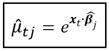
- μ^tj: final prediction for time step, t
- Process
- Fit and get predictions from a dynamic regression model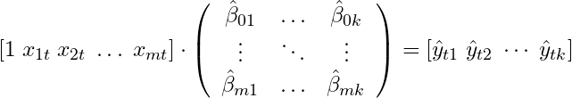
- m predictor variables and k states (i.e. a complete set of parameters is estimated for each state at each time step)
- Get the final prediction for time step, t, by calculating the expected value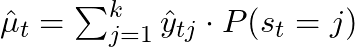
- ^y are the predictions from the observed model
- P(st = j) are the state probabilities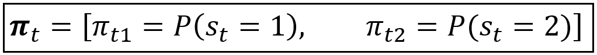
- e.g. 2 -states
- Where each πtj is a row of the transition matrix
- Uses Maximum Likelihood Estimation (MLE) or Expectation Maximization (EM) to maximize the joint probability density.
- Estimated parameters:
- transition matrix (for each time step)
- During estimation, cells are allowed to range from -∞ to ∞, but after it’s completed, they’re normalized to [0,1] (see link)
- regression coefficients (for each state)
- Unclear to me how you estimate multiple coefficients with the same data. Maybe the likelihood for a β is maximized for a given (estimated?) transition matrix.
- (residual) variance (for each state)
- transition matrix (for each time step)
- Example: Using MLE for a gaussian distribution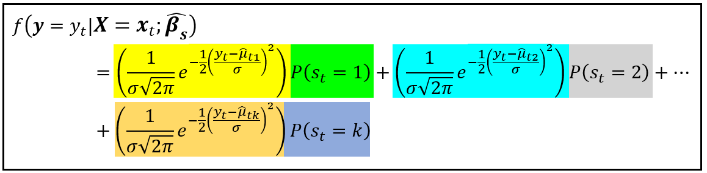
- For a Poisson DGP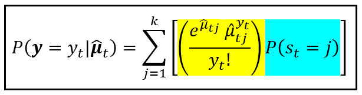
- Estimated parameters:
- Fit and get predictions from a dynamic regression model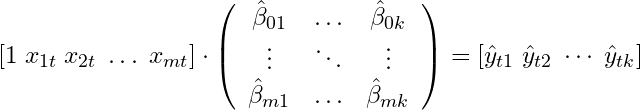
- Example
- Description
- Dependent variable: Personal Consumption Expenditures % Change Month over Month (M-o-M)
- Independent variable: Consumer Sentiment index % Change Month over Month (M-o-M)
- Model Equation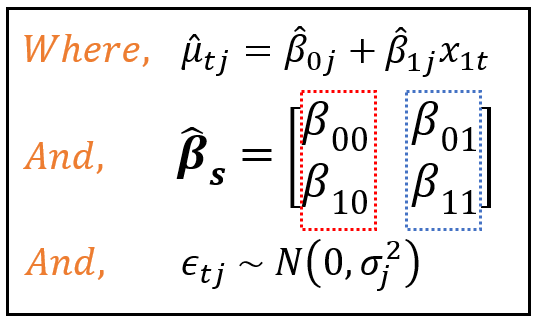
- 2-states
- Observed model is a linear regression
- Model Summary (python)
.png)
- Transition Matrix probabilities have pvals and CIs
- p[0->0] is cell p00 and p[1->0] is cell p10 in the transition matrix
- unknown_cell_values = (1 - known_cell_values) for each row
- Interpretation
- Variance of States vs Transition Probabilities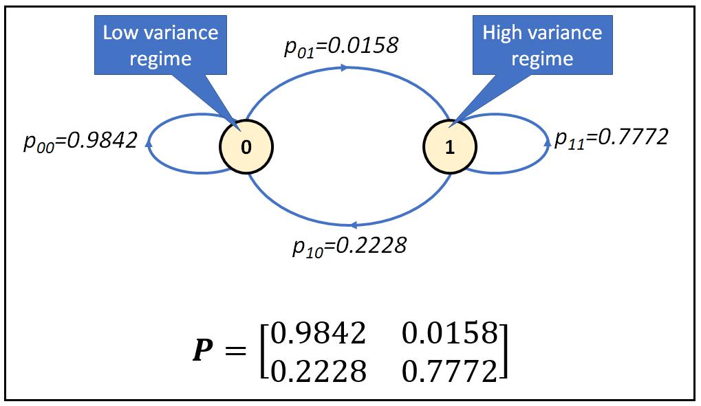
- When Personal Consumption Expenditures are in a low variance regime, they tend to switch to a high variance regime less than 2% of the time.
- When Personal Consumption Expenditures are in a high variance regime, they tend to switch to a low variance regime with roughly 20% probability.
- This variance is “sigma2” in the model summary in the Regime Parameters sections.
- Me: This would be the residual variance which is usually a GOF thing (i.e. variance of the points around the regression line). In finance, variance is a volatility measure and I guess this can be thought of in that way too. I guess it would the volatility around a trend line.
- Smoothed State Probabilities for each time step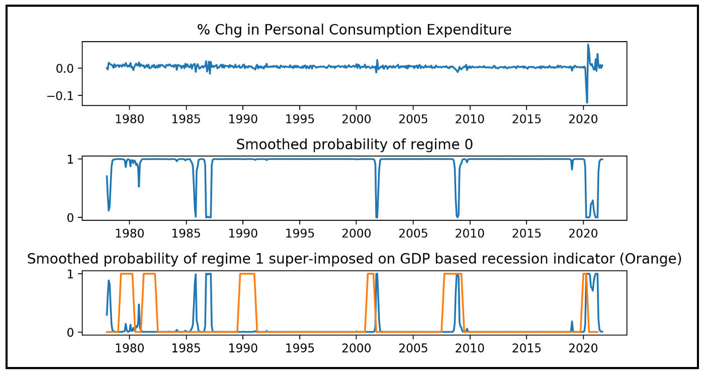
- Bottom two charts’ y-axes are probabilities, so chart 2’s dips in proability are when the hmm is in stage 1 (confirmed by looking at chart 3)
- Accessed via
msdr_model_results.smoothed_marginal_probabilities[0]([1] for state 1) - After 2000, we see that often the Markov state model is in the high variance state towards the end a recession. (bottom chart)
- Variance of States vs Transition Probabilities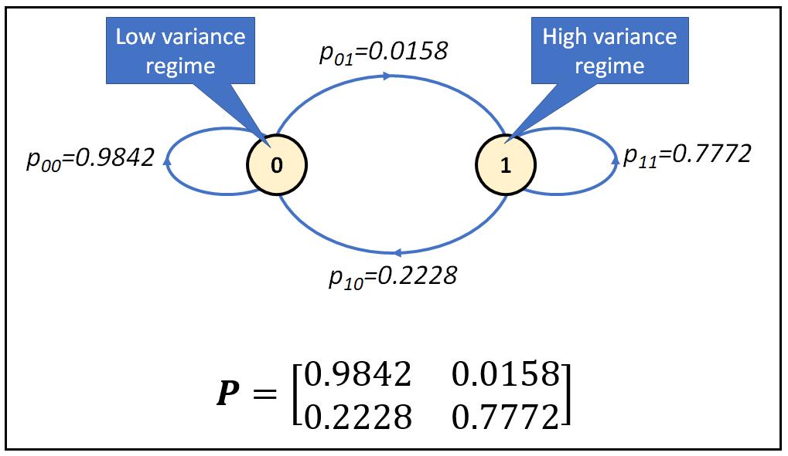
- Description
- Markov Switching Auto Regression (MSAR)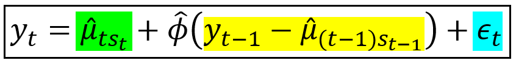
- Adds a fraction of the residual from the previous step to the MSDR model